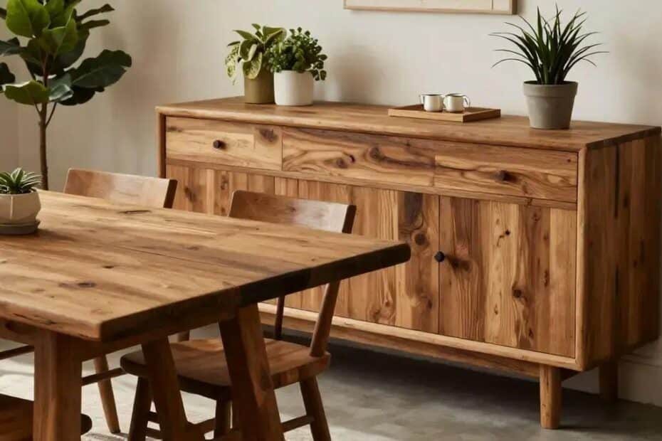
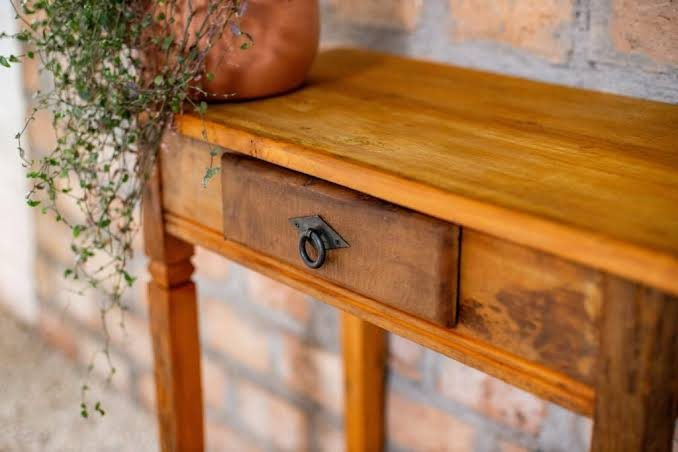
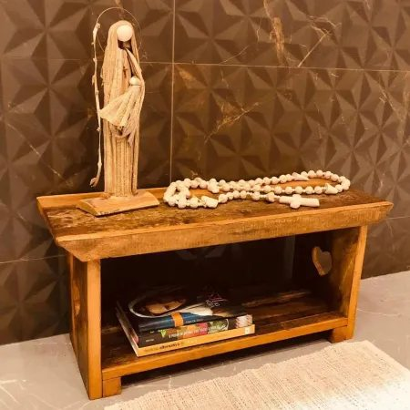
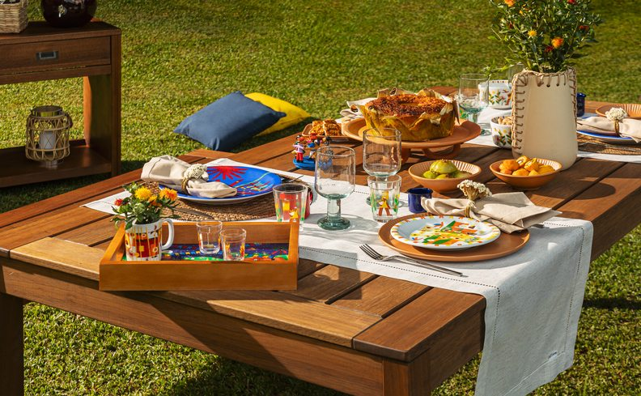

Cada peça carrega uma história — a próxima é a sua.
O Armazém Barroco garimpa, restaura e seleciona móveis e objetos rústicos com caráter. Aparadores, mesas e bancos com madeira de verdade, para quem quer uma casa com memória.



Curadoria de verdade, sem pressa
Garimpo com critério
Cada peça é escolhida pessoalmente, priorizando madeira maciça e boa procedência.
Restauro cuidadoso
Móveis com história recebem restauro que preserva marcas e valoriza o material original.
Peças únicas
Boa parte do estoque vem de garimpo — cada achado tem tiragem limitada, sem reposição igual.
Atendimento de bairro
Loja física no Jardim Paineiras, em Avaré, com atendimento próximo e sem pressa.
O que você encontra no armazém

Mesas & bancos de área externa
Conjuntos robustos para refeições ao ar livre e reuniões em família.
Aparadores & balcões
Peças de destaque para sala de jantar e sala de estar, em madeira maciça.
Bancos & assentos
Bancos baú, recepções e assentos avulsos com espaço para guardar.
Decoração & achados
Peças de garimpo e objetos vintage para dar caráter a qualquer cômodo.
Do garimpo à sua sala
Cada peça passa pelas mesmas quatro etapas antes de chegar até você.
Garimpo & seleção
Buscamos peças com boa madeira e histórias reais para contar.
Restauro & preparo
Limpeza, reforço estrutural e tratamento, preservando marcas do tempo.
Curadoria na loja
As peças ganham espaço no armazém, prontas para você ver e sentir de perto.
Entrega para sua casa
Combinamos entrega e, quando necessário, pequenos ajustes no local.
Um armazém de achados com alma
O Armazém Barroco nasceu em 2019, em Avaré, no interior de São Paulo, da vontade de dar um novo destino a móveis e objetos com história. Fundado por Silvana Pinto do Nascimento, o armazém funciona como uma curadoria de peças rústicas: parte vem de garimpo e restauro, parte é feita por parceiros locais que trabalham madeira maciça.
Aqui, marcas de uso, nós e imperfeições fazem parte do charme — cada peça carrega uma história diferente da anterior.
- Razão social Avare Móveis Rústicos LTDA
- Nome fantasia Armazém Barroco
- Endereço Rua Joselyr Moura Bastos, 32, Jardim Paineiras
- Cidade Avaré, SP — CEP 18705-760
- CNPJ 34.479.353/0001-38
Antes de vir até o armazém
As peças do Armazém Barroco são novas ou usadas?
Trabalhamos com uma mistura: peças de garimpo restauradas, com marcas de uso originais, e peças novas feitas em madeira maciça por parceiros locais. Cada peça informa sua origem.
Se eu gostar de uma peça, ela ainda vai estar na loja quando eu chegar?
Como parte do nosso estoque é de peças únicas de garimpo, recomendamos confirmar disponibilidade pelo formulário ou WhatsApp antes de vir até a loja.
Vocês entregam fora de Avaré?
Sim, combinamos entrega para cidades da região; o valor e o prazo dependem da distância e do tamanho da peça.
Posso encomendar uma peça sob medida?
Para peças novas em madeira maciça, sim — converse com a gente sobre medidas e prazo. Peças de garimpo são vendidas como estão, por serem únicas.
Como funcionam trocas e garantia?
Seguimos o Código de Defesa do Consumidor. Consulte nossa para detalhes sobre peças novas e peças de garimpo.
Visite o armazém ou fale com a gente
Endereço & horário
-
Rua Joselyr Moura Bastos, 32
Jardim Paineiras
Avaré — SP, CEP 18705-760 - [e-mail de contato a definir]
- [telefone / WhatsApp a definir]
| Segunda a sexta | 9h – 18h |
| Sábado | 9h – 13h |
| Domingo | Fechado |
Vamos achar (ou preparar) a peça certa pra você
Conte o que você procura e a gente ajuda a encontrar, sem compromisso.
Fale com a gente